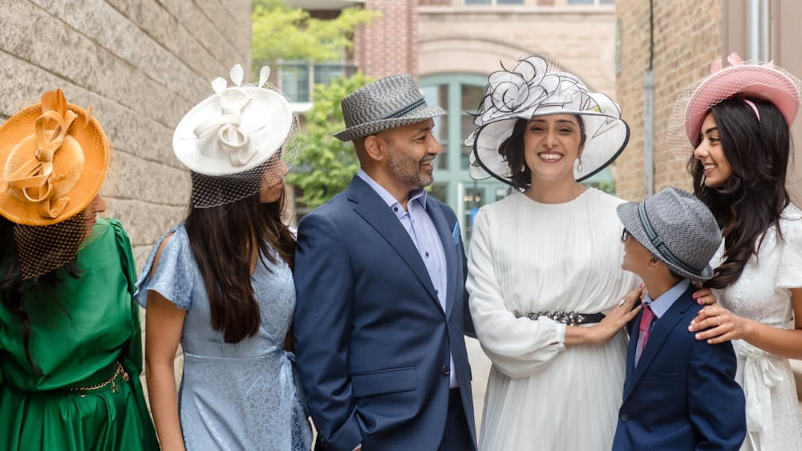

Anisha Jogee is an educator, small business owner, mother of four, and longtime Arlington Heights resident who has spent nearly a decade serving her community as a member of the Arlington Heights School District 25 Board of Education.
Anisha and her husband, Sajid Patel, have called Arlington Heights home for 18 years. They moved to the community when their oldest daughter was preparing to begin kindergarten and have since raised all four of their children here. Three of their daughters have graduated from District 25 and 214 schools, and their son is a middle schooler.
For Anisha, public service has always been rooted in community building. She and her husband are both Arlington Heights small business owners—she owns an organizational leadership consulting practice, and he owns an engineering and manufacturing firm. Anisha also brings more than 30 years of experience in education, has launched and served on nonprofit organizations, and earned her Doctorate in Organizational Change and Leadership, with research focused on effective governance.
Her commitment to education is also deeply personal. As a first-generation high school graduate, Anisha is especially grateful to her parents, who did not have the opportunity to complete a high school education themselves. Their sacrifices and belief in education helped shape both her career and her conviction that education can open doors and create opportunity for generations to come.
Anisha was first elected to the Arlington Heights School District 25 Board of Education in 2017 and has since been trusted by voters to serve three terms. She has also served as Board President, helping lead the district through the challenges of the pandemic and the years that followed. Under her leadership as president, the board received the Illinois Association of School Boards' School Board Governance Recognition Award in 2023, the first time District 25 earned the distinction.
Her years on the school board have given Anisha firsthand experience with the responsibilities of local government: overseeing public resources, setting long-term priorities, working collaboratively with fellow elected officials and professional staff, and, most importantly, building stronger relationships with the communities she represents to give everyone a seat at the table.

She is a small business owner, volunteers with the Arlington Heights Memorial Library, and enjoys playing pickleball at the Park District.
Anisha is running for Arlington Heights Village Trustee to help build on what makes our community special while thoughtfully preparing for its future. Her vision centers on three priorities: flourishing neighborhoods where residents feel connected, safe, and proud to call home; thriving businesses that strengthen our local economy and bring energy and opportunity to our community; and a community where everyone knows they belong, where residents are heard, welcomed, and connected to their Village government. Drawing on her experience in local government, governance, business, and community leadership, Anisha will bring a collaborative, forward-looking approach to the decisions that will shape Arlington Heights for years to come.
After nearly two decades being an invested resident, Anisha is ready to take the next step in her public service and help ensure Arlington Heights remains a place where families, businesses, and neighbors can thrive for generations to come.